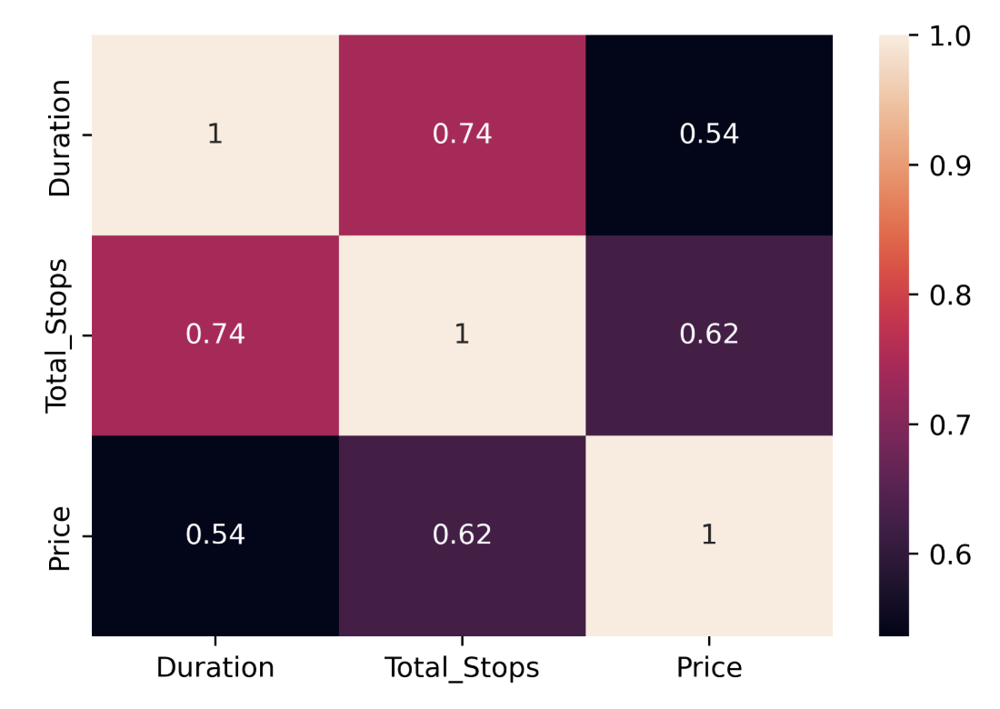
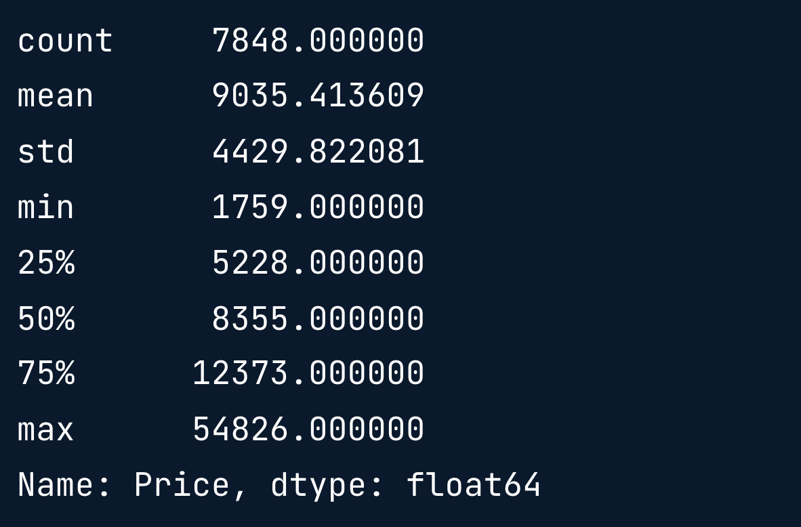
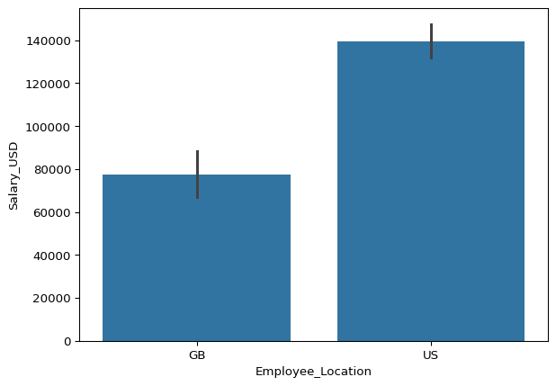
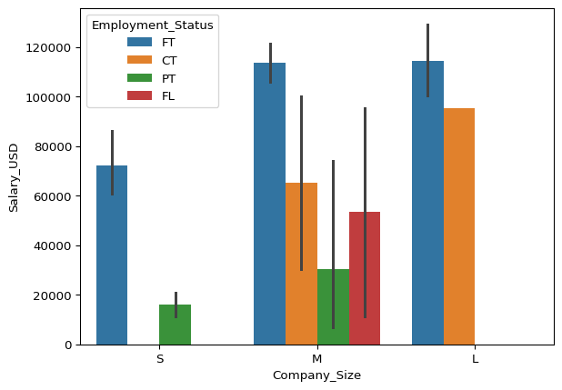

print(planes('Destination').value_counts())Convertir el análisis exploratorio en acción
El análisis exploratorio de datos es un paso crucial en el flujo de trabajo de la ciencia de datos, ¡por no esl el final! Ahora es el momento de aprender técnicas y consideraciones que puedes utilizar para avanzar con éxito en tus proyectos una vez que hayas terminado de explorar.
Consideraciones para datos categóricos
- Por qué ejecutar EDA?
- Detectar patrones y relaciones.
- Generar preguntas o hipótesis.
- Preparar datos para modelos de machine learning.
- Representatividad de los datos
- La muestra debe representar la población.
- Por ejemplo:
- Educación versus ingresos en USA
- No se pueden usar datos de Francia
- Educación versus ingresos en USA
- Clases Categóricas
- Clases = etiquetas
- Ejemplo, actitudes de las personas hacia el matrimonio.
- Estado civil
- Soltero
- Casado
- Divorciado
- Estado civil
- Desbalance de Clases

- Frecuencia de Clases

Frecuencia relativa de clases
- 40% de los vuelos internos de la India van hacia Delhi.
planes['Destination'].value_counts(normalize=True)
Es nuestra muestra representativa de la población? (Vuelos internos de India)
Tabulación Cruzada
- Es otro método para observar la frecuencia de clase, que permite examinar la frecuencia de combinaciones de clases

pd.crosstab(planes['Source'], planes['Destination'])
- Extendiendo la tabulación cruzada
| Source | Destination | Median Price (IDR) |
|---|---|---|
| Banglore | Delhi | 4232.21 |
| Banglore | New Delhi | 12114.56 |
| Chennai | Kolkata | 3859.76 |
| Delhi | Cochin | 9987.63 |
| Kolkata | Banglore | 9654.21 |
| Mumbai | Hyderabad | 3431.97 |
- Agregación de valores con pd.crosstab()
pd.crosstab(planes['Source'], planes['Destination'],
values=planes['Price'], aggfunc='median')
Los resultados muestran valores de la mediana para todas las rutas posibles en el conjunto de datos.
- Comparando la muestra con la población
| Source | Desitnation | Median Price (IDR) | Median Price (dataset) |
|---|---|---|---|
| Banglore | Delhi | 4232.21 | 4823.0 |
| Banglore | New Delhi | 12114.56 | 10976.50 |
| Chennai | Kolkata | 3859.76 | 3850.0 |
| Delhi | Cochin | 9987.63 | 10260.0 |
| Kolkata | Banglore | 9654.21 | 9345.0 |
| Mumbai | Hyderabad | 3431.97 | 3342.0 |
Comprobación del desequilibrio de clases
La Encuesta Kaggle 2022 recoge la información sobre la formación de los científicos de datos, sus tecnologías y técnicas preferidas. Se considera una visión precisa de lo que está ocurriendo en la ciencia de datos, basada en el volumen y el perfil de los que responden.
Una vez examinados los títulos de los puestos y categorizados para alinearlos con nuestro salaries DataFrame`, puedes ver la siguiente proporción de categorías laborales en la encuesta Kaggle:
| Categoría laboral | Frecuencia relativa |
|---|---|
| Ciencia de datos | 0,281236 |
| Análisis de datos | 0,224231 |
| Otros | 0,214609 |
| Dirección | 0,121300 |
| Machine Learning | 0,083248 |
| Ingeniería de datos | 0,075375 |
Pensando en los resultados de la encuesta Kaggle como población, tu tarea consiste en averiguar si el DataFrame salaries es representativo comparando la frecuencia relativa de las categorías laborales.
import pandas as pd
ruta = './data/salaries.csv'
salaries = pd.read_csv(ruta)
salaries.head()| Working_Year | Designation | Experience | Employment_Status | Salary_In_Rupees | Employee_Location | Company_Location | Company_Size | Remote_Working_Ratio | Salary_USD | Job_Category | |
|---|---|---|---|---|---|---|---|---|---|---|---|
| 0 | 2020 | Machine Learning Scientist | SE | FT | 20688070.0 | JP | JP | S | 0.0 | 248256.840 | Machine Learning |
| 1 | 2020 | Big Data Engineer | SE | FT | 8674985.0 | GB | GB | M | 50.0 | 104099.820 | Data Engineering |
| 2 | 2020 | Product Data Analyst | MI | FT | 1591390.0 | HN | HN | S | 0.0 | 19096.680 | Data Analytics |
| 3 | 2020 | Machine Learning Engineer | SE | FT | 11935425.0 | US | US | L | 50.0 | 143225.100 | Machine Learning |
| 4 | 2020 | Data Analyst | EN | FT | 5729004.0 | US | US | L | 100.0 | 68748.048 | Data Analytics |
Instrucciones
- Imprime la frecuencia relativa de la columna
Job_CategorydesalariesDataFrame
Note
Para exportar el dataset en formato CSV dentro de DataCamp y luego copiarlo:
print(salaries.to_csv(index=False))# Print the relative frequency of Job_Category
print(salaries['Job_Category'].value_counts(normalize=True))Job_Category
Data Science 0.277641
Data Engineering 0.272727
Data Analytics 0.226044
Machine Learning 0.120393
Other 0.068796
Managerial 0.034398
Name: proportion, dtype: float64Parece que Data Science es la clase más popular y tiene una representación similar. Aún así, las otras categorías tienen frecuencias relativas bastante diferentes, lo cual pordría no ser sorprendente dado que el público objetivo son científico de datos. Dada la diferencia en las frecuencias relativas, ¿puedes confiar en que el DataFrame salaries representa con precisión los roles gerenciales?
Tabulación cruzada
La tabulación cruzada puede ayudar a identificar cómo se combinan las observaciones.
Utilizando el conjunto de datos salaries, que se ha importado como un DataFrame pandas, realizarás una tabulación cruzada de múltiples variables, incluyendo el uso de la agregación, para ver la relación entre ‘Company_Size’ y otras variables.
Instrucciones
- Realiza una tabulación cruzada, estableciendo
Company_Sizecomo índice, y las columnas a las clases enExperience.
# Cross-tabulate Company_Size and Experience
print(pd.crosstab(salaries['Company_Size'], salaries['Experience']))Experience EN EX MI SE
Company_Size
L 24 7 49 44
M 25 9 58 136
S 18 1 21 15- Cruza ‘Job_Category’ y las clases de ‘Company_Size’ como nombres de columna.
# Cross-tabulate Job_Category and Company_Size
print(pd.crosstab(salaries['Job_Category'], salaries['Company_Size']))Company_Size L M S
Job_Category
Data Analytics 23 61 8
Data Engineering 28 72 11
Data Science 38 59 16
Machine Learning 17 19 13
Managerial 5 8 1
Other 13 9 6- Actualiza
pd.crosstab()para que devuelva los valores medios deSalary_USD.
# Cross-tabulate Job_Category and Company_Size
print(pd.crosstab(salaries['Job_Category'], salaries['Company_Size'], values= salaries['Salary_USD'], aggfunc='mean'))Company_Size L M S
Job_Category
Data Analytics 112851.749217 95912.685246 53741.877000
Data Engineering 118939.035000 121287.060500 86927.136000
Data Science 96489.520105 116044.455864 62241.749250
Machine Learning 140779.491529 100794.236842 78812.586462
Managerial 190551.448800 150713.628000 31484.700000
Other 92873.911385 89750.578667 69871.248000Ésta es una función útil para examinar la combinación de frecuencias, así como para encontrar estadísticas agregadas. ¡Parece que el salario medio más alto es para roles de datos gerenciales en grandes empresas!
Generar nuevas Características
- Correlación
sns.heatmap(planes.corr(numeric_only=True), annot=True)
plt.show()
- Viendo el tipo de datos
print(planes.dtypes)
- Total Stops
print(planes['Total_Stops'].value_counts())
Se observa que es necesario eliminar algunos caracteres.
- Limpiando Total Stops
planes['Total_Stops'] = planes['Total_Stops'].str.replace(' stops', '')
planes['Total_Stops'] = planes['Total_Stops'].str.replace(' stop', '')
planes['Total_Stops'] = planes['Total_Stops'].str.replace('non-stop', '0')
planes['Total_Stops'] = planes['Total_Stops'].astype(int)- Correlación
sns.heatmap(planes.corr(numeric_only=True), annot=True)
plt.show()
- Fechas
print(planes.dtypes)
- Extrayendo el mes y el día de la semana
planes['month'] = planes['Date_of_Journey'].dt.month
planes['weekday'] = planes['Date_of_Journey'].dt.weekday
print(planes[['month', 'weekday', 'Date_of_Journey']].head())
- Tiempos de salidas y llegadas
planes['Dep_Hour'] = planes['Dep_Time'].dt.hour
planes['Arrival_Hour'] = planes['Arrival_Time'].dt.hour- Correlación

No hay correlaciones, pero no lo sabríamos si no se hubieran generado nuevas características.
- Creando características
print(planes['Price'].describe())
| Rango | Tipo de tiquete |
|---|---|
| <= 5228 | Economy |
| > 5528 <= 8355 | Premium Economy |
| > 8355 <= 12373 | Business Class |
| > 12373 | First Class |
- Estadística descriptiva
twenty_fifth = planes['Price'].quantile(0.25)
median = planes['Price'].median()
seventy_fifth = planes['Price'].quantile(0.75)
maximum = planes['Price'].max()- Etiquetas y bins
labels = ['Economy', 'Premium Economy', 'Business Class', 'First Class']
bins = [0, twenty_fifth, median, seventy_fifth, maximum]- pd.cut()

planes['Price_Category'] = pd.cut(planes['Price'], labels=labels, bins=bins)- Categoría de precios
print(planes[['Price', 'Price_Category']].head())
- Categoría de precio por aerolínea
sns.countplot(data=planes, x='Airline', hue='Price_Category')
plt.show()
Extraer características para la correlación
En este ejercicio trabajarás con una versión del conjunto de datos salaries que contiene una nueva columna llamada “`date_of_response”.
El conjunto de datos se ha leído comjo un DataFrame de pandas, con “date_of_response” como tipo de datos datetime.
Tu tarea consiste en extraer los atributos fecha-hora de esta columna y, a continuación, crear un mapa de calor para visualizar los coeficientes de correlación entre las variables.
Important
Para realizar el ejercicio fue necesario bajar el DataFrame de Datacamp teniendo en cuenta la nueva columna, y cambiando el tipo de formato de la columna date_of_response usando los comandos:
print(salaries.to_csv(index=false))import pandas as pd
import seaborn as sns
import matplotlib.pyplot as plt
ruta = './data/salaries_2.csv'
salaries = pd.read_csv(ruta)
# Cambia el tipo de datos de date_of_response
salaries['date_of_response'] = pd.to_datetime(salaries['date_of_response'])
salaries.head()| Designation | date_of_response | Experience | Employment_Status | Salary_In_Rupees | Employee_Location | Company_Location | Company_Size | Remote_Working_Ratio | Salary_USD | Job_Category | |
|---|---|---|---|---|---|---|---|---|---|---|---|
| 0 | Machine Learning Scientist | 2020-01-07 | SE | FT | 20688070.0 | JP | JP | S | 0.0 | 248256.840 | Machine Learning |
| 1 | Big Data Engineer | 2020-09-19 | SE | FT | 8674985.0 | GB | GB | M | 50.0 | 104099.820 | Data Engineering |
| 2 | Product Data Analyst | 2020-11-21 | MI | FT | 1591390.0 | HN | HN | S | 0.0 | 19096.680 | Data Analytics |
| 3 | Machine Learning Engineer | 2020-11-29 | SE | FT | 11935425.0 | US | US | L | 50.0 | 143225.100 | Machine Learning |
| 4 | Data Analyst | 2020-09-07 | EN | FT | 5729004.0 | US | US | L | 100.0 | 68748.048 | Data Analytics |
Instrucciones
Extrae el mes de “
date_of_response”, almacenándolo como una columna llamada “month”.Crea la columna “
weekday”, que contiene el día de la semana en que los participantes completaron la encuesta.Traza un mapa de calor, incluyendo las puntuaciones del coeficiente de correlación de Pearson.
# Get the month of the response
salaries['month'] = salaries['date_of_response'].dt.month
# Extract the weekday of the response
salaries['weekday'] = salaries['date_of_response'].dt.weekday
# Create a heatmap
sns.heatmap(salaries.corr(numeric_only=True), annot=True)
plt.show()
¡Fantástica creación de características! Parece que no hay relaciones significativas entre nuestras variables numéricas, así que veamos si convertir los datos numéricos en clases ofrece información adicional.
Cálculo de los percentiles salariales
Tu tarea consiste en convertir la columna “Salary_USD” en categorías basadas en sus percentiles . Primero tienes que encontrar los percentiles y almacenarlos como variables.
Instrucciones
Halla el percentil 25 de “
Salary_USD”Guarda la mediana de “
Salary_USD” comosalaries_median.Obtén el percentil 75 de los salaries
# Find the 25th percentile
twenty_fifth = salaries['Salary_USD'].quantile(0.25)
# Save the median
salaries_median = salaries['Salary_USD'].median()
# Gather the 75th percentile
seventy_fifth = salaries['Salary_USD'].quantile(0.75)
print(twenty_fifth, salaries_median, seventy_fifth)60880.691999999995 97488.552 143225.1¡Parece que el rango intercuartil está entre 60881 y 143225 dólares! ¡Ahora usemos estas variables para agregar una columna categórica de salario en el DataFrame
Categorizar los salarios
¡Ahora es el momento de crear una nueva categoría! Utilizarás las variables twenty_fifth, salaries_median y seventy_fifth, que creaste en el ejercicio anterior, para dividir los salarios en diferentes etiquetas.
El resultado será una nueva columna llamada “salary_level”, que incorporarás a una visualización para analizar el salario de los encuestados y en empresas de distintos tamaños.
Instrucciones
- Crea
salaries_labels, una lista que contenga “entry”, “mid”, “senior” y “exec”.
# Create salary labels
salary_labels = ['entry', 'mid', 'senior', 'exec']- Termina
salary_ranges, añadiendo el percentil 25, la mediana, el percentil 75 y el valor más grande de “Salary_USD”
# Create the salary ranges list
salary_ranges = [0, twenty_fifth, salaries_median, seventy_fifth, salaries['Salary_USD'].max()]- Divide “
Salary_USD” en función de las etiquetas y rangos que hayas creado.
# Create salary_level
salaries['salary_level'] = pd.cut(salaries['Salary_USD'], bins=salary_ranges, labels=salary_labels)- Utiliza
sns.countplot()para visualizar el reconteo de “Company_Size”, factrorizando las etiquetas de nivel salarial.
# Plot the count of salary levels at companies of different sizes
sns.countplot(data=salaries, x='Company_Size', hue='salary_level')
plt.show()
Al usar pd.cut() para dividir los datos numéricos en categorías, se puede ver que una gran proporción de trabajadores en empresas pequeñas reciben salarios de nivel de “entrada”, mientras que más personal en empresas medianas son recompensados con salarios de nivel “senior”. ¡Ahora vamos a ver cómo generar hipótesis a medida que se llega al final de la fase de EDA!
Generar hipótesis
Generar hipótesis es una tarea fundamental para los científicos de datos.
Al realizar EDA, la pregunta que debemos hacernos es ¿Cómo sabemos que lo que estamos observando es verdadero?
Por ejemplo:
Si recopilamos nuevos datos sobre vuelos de un período de tiempo diferente ¿observaríamos los mismos resultados?
Detectar relaciones, diferencias y patrones:
- Usamos Prueba de hipótesis
La prueba de hipótesis requiere previo a la recolección de datos:
- Generar una hipótesis o pregunta.
- Una decisión en la se pueda usar una prueba estadística
Data snooping
- Los análisis de datos excesivos, la generación de múltiples hipótesis y la ejecución de múltiples pruebas estadísticas
Generación de Hipótesis
- Se realiza usando análisis exploratorio de datos
Próximos pasos
- Diseñar nuestro experimento.
- Envuelve pasos como:
- Elegir una muestra
- Calcular cuántos puntos de datos necesitamos
- Decidir que prueba estadística ejecutar.
Comparar salarios
¡El análisis exploratorio de datos es un paso crucial en la generación de hipótesis!
Se te ha ocurrido una idea que te gustaría investigar: ¿los profesionales de los datos cobran más en Estados Unidos que en Gran Bretaña?
Tendrás que subconjuntar los datos en “Employee_Location” y elaborar un gráfico que muestre el salario medio entre los dos grupos.
Instrucciones
Filtra
salariesdonde “Employee_Location” es “US” o “GB”, guardando comousa_and_gb.Utiliza
usa_and_gbpara crear un gráfico de barras que visualice “Salary_USD” frete a “Employee_Location”.
# Filter for employees in the US or GB
usa_and_gb = salaries[salaries['Employee_Location'].isin(['US', 'GB'])]
# Create a barplot of salaries by location
sns.barplot(data=usa_and_gb, x='Employee_Location', y='Salary_USD')
plt.show()
Al subconfigurar los datos, pudiste comparar directamente los salarios entre EE.UU. y Gran Bretaña. La visualización sugiere que has generado una hipótesis que vale la pena investigar formalmente para determinar si existe una diferencia real o no.
Elegir una hipótesis
Has visto cómo las visualizaciones pueden utilizarse para generar hipótesis, ¡lo que las convierte en una parte crucial del análisis exploratorio de datos!
En este ejercicio, generarás un diagrama de barras para inspeccionar cómo difieren los salarios según el tamaño de la empresa y la situación laboral.
Como referencia, hay cuatro valores:
| Valor | Significado |
|---|---|
CT |
Contratista |
FL |
Autónomo |
PT |
A tiempo parcial |
FT |
A tiempo completo |
Instrucciones
- Elabora un diagrama de barras comparando “
Salary_USD” por “Company_Size”, factorizando “Employment_Status”.
# Create a bar plot of salary versus company size, factoring in employment status
sns.barplot(data=salaries, x='Company_Size', y='Salary_USD', hue='Employment_Status')
plt.show()
- Pregunta ¿ Cuál es una hipótesis razonable que se puede generar a partir de esta trama?
Respuestas Posibles
Los contratistas parecen se mejor pagados por las grandes empresas en promedio según los datos, ¡así que esta es una hipótesis razonable!